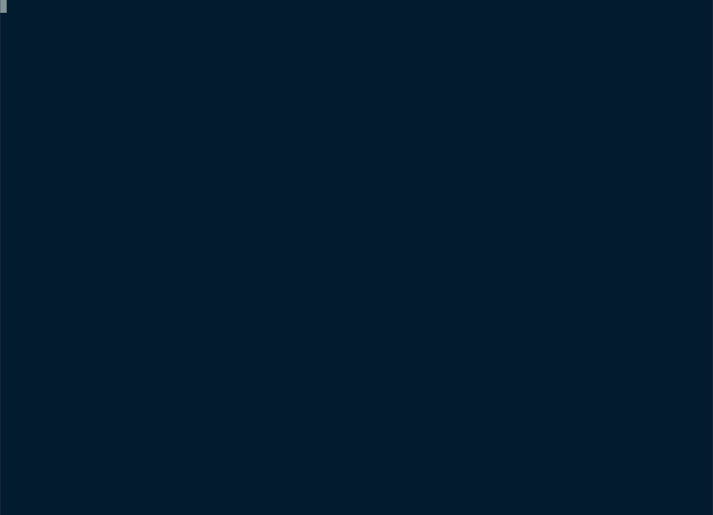

Hello Snapshot Testing


Snapshots tests (also sometimes called approval tests) are tests that assert
values against a reference value (the snapshot). Think of it as a supercharged
version of assert_eq!. It lets you compare a value against a reference
value but unlike simple assertions the reference value is managed by insta
for you.
What's in the Box?
- Interactive snapshot reviews: with
cargo-instayou can perform reviews of all changed snapshots conveniently. - Inline snapshots: insta can store snapshots right within your source file.
- External snapshots: it's also possible to store snapshots as separate files.
- Redactions: if you have output which can change between test runs (such as random identifiers, timestamps or others) you can instruct insta to redact these parts.
- Flexible formats: you can pick between snapshoting into different formats such as JSON, YAML, TOML, CSV or others.
- Editor Support: insta also provides a VS Code Extension that lets you review snapshots right from within your editor.
- Pretty Diffs: insta renders beautiful snapshot diffs right in your terminal with the help of the similar crate.
- Supports older Rust: insta, similar and similar-asserts support Rust down to 1.51.
- Apache-2.0 licensed: because the best tools are Open Source under a convenient license.
What Does This Look Like?
Pretty simple. You write a test function where you perform some sort of
computation and then use one of the insta provided assertion macros:
#[test]
fn test_simple() {
insta::assert_yaml_snapshot!(calculate_value());
}
Note that no reference value is provided. Instead the reference value is placed on the first test run in a separate snapshot file. Insta will automatically manage that snapshot for you.
Test Workflow
This is what this process looks like in an actual example:

Learn More
Want to learn more?
- There is a 12 minute introduction screencast that walks you through how it works: Snapshot Testing with Insta
- Read the quickstart for more information
- Read the API documentation for a deep dive on the API
Found an issue?
You can
edit this page
on GitHub.